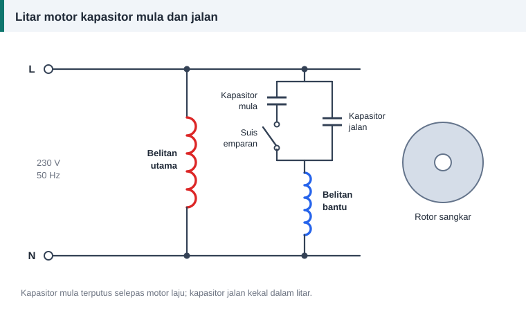

Motor satu fasa
Kapasitor Mula dan Kapasitor Jalan: Perbezaan, Nilai dan Cara Menguji
Dua kapasitor pada motor satu fasa mungkin kelihatan serupa, tetapi tugasnya berbeza dan kedua-duanya tidak boleh ditukar ganti.


Perbandingan ringkas
| Perkara | Kapasitor mula | Kapasitor jalan |
|---|---|---|
| Tugas | Tork permulaan yang tinggi | Anjakan fasa berterusan dan faktor kuasa lebih baik |
| Tempoh dalam litar | Beberapa saat sahaja | Sepanjang motor berjalan |
| Binaan | Elektrolit aluminium tak berkutub | Filem polipropilena |
| Julat kemuatan lazim | Biasanya melebihi 70 µF | 1.5 hingga 100 µF |
| Kelas voltan lazim | 125, 165, 250 dan 330 V | 250, 370 dan 440 V |
| Pemutusan | Suis emparan atau geganti | Tiada; kekal tersambung |
Mengapa tidak boleh ditukar ganti
Kapasitor mula direka untuk tugas sekejap. Jika dibiarkan dalam litar, ia menjadi panas dan gagal. Kapasitor jalan pula boleh bekerja berterusan, tetapi kemuatannya terlalu kecil untuk memberi tork mula yang sama.
Tanda kapasitor rosak
- Motor berdengung tetapi tidak mula, atau hanya mula jika aci diputar dengan tangan.
- Motor mula dengan perlahan dan torknya lemah.
- Bekas kapasitor kembung, bocor atau retak.
- Motor kapasitor jalan menjadi panas dan arusnya tinggi.
Semak kapasitor dahulu sebelum menyalahkan belitan. Ia lebih murah dan lebih kerap menjadi punca.
Menguji kapasitor
- Putuskan bekalan dan nyahcas kapasitor melalui perintang. Jangan pintaskan terminalnya dengan pemutar skru.
- Tanggalkan sekurang-kurangnya satu wayar daripada kapasitor.
- Ukur dengan meter kemuatan dan bandingkan dengan nilai serta toleransi yang tercetak.
- Tanpa meter kemuatan, meter ohm analog memberi petunjuk kasar. Jarum yang melonjak kemudian kembali perlahan-lahan menunjukkan kapasitor mengecas. Tiada gerakan bermaksud litar terbuka. Jarum yang kekal di sifar bermaksud litar pintas.
Memilih pengganti
- Kemuatan: sama dengan asal, dalam toleransi yang tercetak pada kapasitor.
- Voltan: sama atau lebih tinggi. Kapasitor 440 V boleh menggantikan 370 V, tetapi bukan sebaliknya.
- Jenis: kapasitor mula diganti dengan kapasitor mula, dan kapasitor jalan dengan kapasitor jalan.
- Frekuensi dan suhu kadaran: sesuai dengan tempat pemasangan.
Nilai kapasitor yang salah menyebabkan medan tidak sekata. Motor menjadi bising, panas dan kurang bertenaga.
Selepas lilit semula
Kapasitor dan belitan bantu direka sebagai satu pasangan. Jika bilangan lilitan atau saiz dawai belitan bantu berubah, nilai kapasitor yang sesuai turut berubah. Sebab itu belitan bantu mesti disalin dengan tepat.
Keselamatan
Kapasitor boleh menyimpan cas selepas bekalan diputuskan. Nyahcas setiap kali sebelum menyentuh terminalnya, dan ikuti langkah dalam keselamatan semasa membaiki motor.
Rujukan dan bacaan lanjut
Artikel berkaitan
Motor Satu Fasa: Belitan Utama dan Belitan Bantu
Motor satu fasa memerlukan dua belitan untuk mula berpusing. Fahami peranan belitan utama, belitan bantu, kapasitor dan suis emparan sebelum melilit semula motor jenis ini.
Melilit Semula Kipas Siling: Panduan untuk Pemula
Kipas siling ialah projek lilitan semula pertama yang popular. Fahami binaan stator dalamnya, belitan utama dan bantu, kapasitor serta langkah kerja sebelum membuka kipas anda.
Keselamatan Semasa Membaiki dan Menguji Motor Elektrik
Elektrik, bahagian berpusing, haba dan bahan kimia semuanya hadir di bengkel motor. Ikuti lima langkah pengasingan bekalan dan amalan selamat ini sebelum memulakan sebarang kerja.